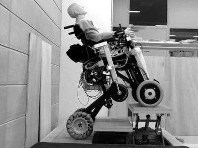

電動車椅子型ロボット

公共施設のバリアフリー化としてエレベータの設置等が進んだことで、車椅子での移動の障害は減ってきている。しかしながら、エレベータはエスカレータに比べて輸送能力に限界がある。車椅子対応のエスカレータもあるが、これを利用するためには係員が操作して全ての歩行者を止める必要があり、利用には心理的障害が大きい。また、車椅子でバスや列車に乗るためには、運転手や駅員がスロープを設置して段差と隙間を乗り越える必要がある。これらの課題を解決するために、モビリティとしての安定性を保ちながら自律的にエスカレータやノンステップバスなどの公共移動手段に乗り込み、傾斜のある歩道を走破できる搭乗型モビリティロボットを提案した。通常走行時は4輪が接地しており、左右の前後輪の独立した自由度を活かして座面を水平に保つ。段差・隙間乗り越えに際しては6輪モードに変形し、常に4輪以上を接地させながら，残りの2輪を持ち上げて移動する。機構を工夫することで5本の直動アクチュエータで変形動作を行うシステムを開発した。
成果公開
- Tomoyuki Takahata and Isao Shimoyama, “Mechanism of a wheel-chair type mobility robot adapted to escalators and low-floor buses,” IROS2017, 2017. (Open poster)
- 高畑智之, 石川勝, 松本潔, 下山勲, “エスカレータ等の公共移動手段に適応する搭乗型モビリティロボット,” 第34回日本ロボット学会学術講演会, 1D1-05, 2016.
車椅子に対応した低床バスやユニバーサルタクシーに路面からスロープなしで乗降することのできる電動車椅子の実現を目指して、搭乗型モビリティロボットを設計・試作し、高さ340 mmの段差を昇降できることを実験により示した。
成果公開
- 高畑智之, 原田達也, “公共交通機関の大きな段差を昇降可能な搭乗型モビリティロボット,” 第40回日本ロボット学会学術講演会, 4H1-01, 2022.